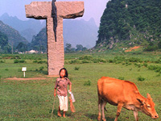
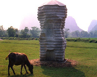
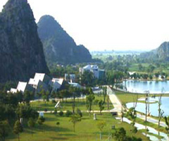
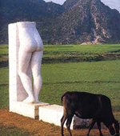
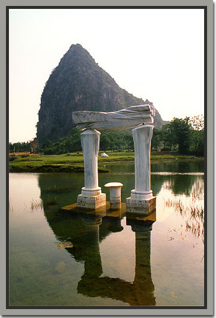

中国的雕塑艺术是整个人类文化艺术的重要组成部分。
雕塑乃雕刻和塑造的总称。是以可塑的材料，人为地制作出各种具有实在体积的形象。它突破了 语言文字国家极民族的限制，形象地记录科学、文化、经济、政治、军事、风俗等社会生活，具有相当高地艺术价值，也是研究人类历史的珍贵资料。
中国古代的雕塑艺术之所以能够产生发展并流传下来，是与人类的精神需要密切相关的，它所着 意探求的是人类自身的力量和人的真善美。具有举世公认的独特地位。
这是一片被不太高且不是特别美的山峰环绕着的开阔地带，但恰恰是这不太高且不太美的山势，很好地营造出了展示现代派的舞台，青山和雕塑相映成辉，设想如果 山形很美或很高，可能展示出来的就只能是山体本身了。选择这样的地形更体现了营造者的用心之良苦。
这个雕塑园是一位姓曹的台湾先生投资创建的，据说他走遍了大江南北，最后选在了桂林这个地方，作品来自世界各地、耗资之巨是可想而知的，在现今这个拜金盛 行的社会里，曹先生也只好以愚自自嘲，自封为“愚自乐园”。守园人还告诉我：现在这个雕塑园的作品只有不足百件，打算要搞三百件（比目前世界最大的雕塑公 司——日本相根公园还大！）。而这个雕塑园只是整个愚自乐园的一小部分，还要建世界花廊、艺术村……，要建三十年，用守园人的话说：到时候你三天都走不完 呢！你相信吗？我不相信，所以我每年都要来看看。